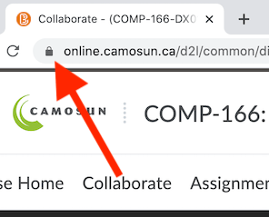
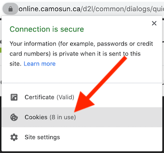
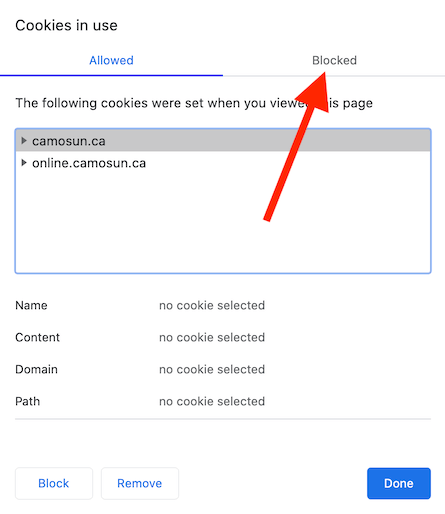
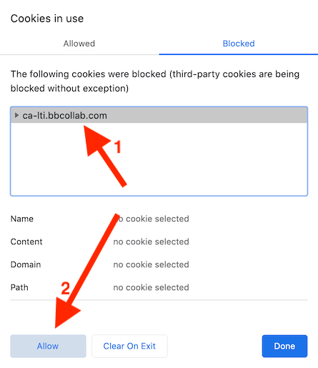
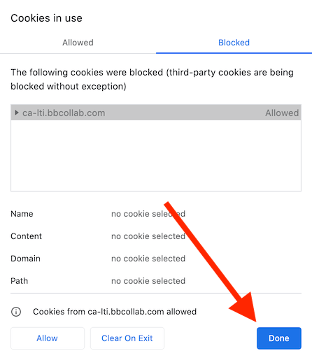
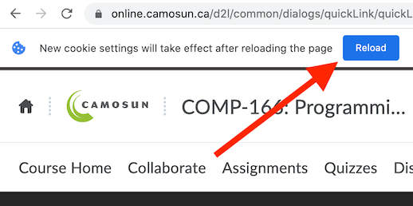

If you're using Chrome, you might get stuck with this when trying to login to Collaborate:
The issue is most likely due to a cookie being blocked, and is easy to fix!
Click the lock icon on the left side of the address bar.
Choose "Cookies" from the drop-down menu.
A dialog window will open showing the allowed cookies. Switch to the "Blocked" tab.
Select "ca-lti.bbcollab.com" from the list and click the "Allow" button in the bottom left.
A confirmation should appear at the bottom near the Allow button. Click "Done" to close the dialog.
Reload the page to allow the settings to take effect.
